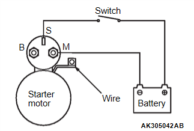
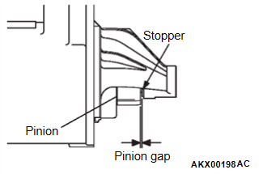
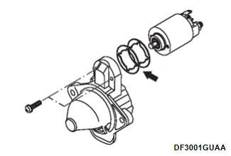
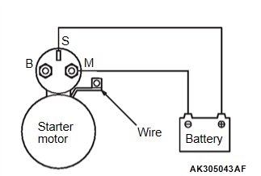
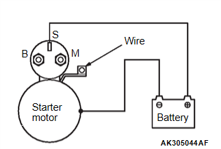
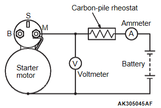
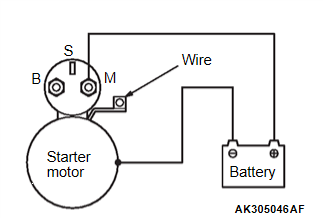

引擎<4B4> - 引擎 ELECTRICAL - STARTING SYSTEM - 起動馬達
啟動馬達總成檢查
N502461290000D00ENG
小齒輪間隙調整
從磁力開關的 M-端子斷開/拔除場線圈線束。

在 S-端子與 M-端子之間連接 12-volt 電池。
將開關設為「開啟」，小齒輪將伸出。
注意：
此測試必須迅速執行（少於 10 秒），以防止線圈燒毀。
使用厚薄規檢查小齒輪與止擋之間的間隙（小齒輪間隙）。
標準值：0.5 - 2.0 mm

若小齒輪間隙超出規格，可透過在磁力開關與前支架之間增減墊片進行調整。

磁力開關吸合測試
從磁力開關的 M-端子斷開/拔除場線圈線束。

在 S-端子與 M-端子之間連接 12-volt 電池。
注意：
此測試必須迅速執行（少於 10 秒），以防止線圈燒毀。
若小齒輪伸出，則吸合線圈正常。若未伸出，請更換磁力開關。
磁力開關保持測試
從磁力開關的 M-端子斷開/拔除場線圈線束。

在 S-端子與車身之間連接 12-volt 電池。
注意：
此測試必須迅速執行（少於 10 秒），以防止線圈燒毀。
手動將小齒輪拉出至小齒輪限位位置/止擋位置。
若小齒輪保持伸出，則一切正常。若小齒輪縮回，表示保持電路斷路。請更換磁力開關。
空轉測試
將啟動馬達夾在配有軟爪的虎鉗上，並依下列方式將充滿電的 12-volt 電池連接至啟動馬達：

在電池 (+) 端子與啟動馬達端子之間串聯連接測試安培計（100-ampere 刻度）與碳堆調整器。
在啟動馬達兩端連接伏特計（15-volt 刻度）。
將調整器旋轉至全電阻位置。
將電瓶線從電池 (-) 端子連接至啟動馬達車身。
調整調整器，直到伏特計顯示的電池電壓為 11 V。
確認最大安培數在規格範圍內，且啟動馬達運轉順暢、自如。
電流：最大 95 A
磁力開關回位測試
從磁力開關的 M-端子斷開/拔除場線圈線束。

在 M-端子與車身之間連接 12-volt 電池。
注意：
此測試必須迅速執行（少於 10 秒），以防止線圈燒毀。
拉出小齒輪後放開。若小齒輪迅速回到原位，則運作正常。若未回位，請更換磁力開關。
警告：
拉出小齒輪時，請注意勿夾傷手指。
已加入書籤
書籤數量過多。
請刪除後重新加入書籤。
×
){kind=link}
){kind=link}
){kind=link}
){kind=link}
){kind=link}
){kind=link}
){kind=link}